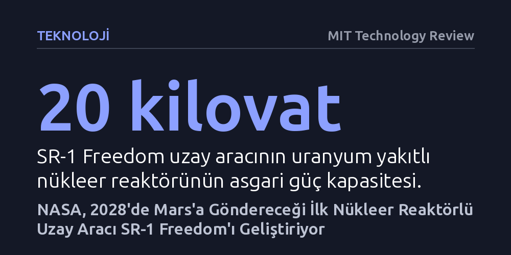

TEKNOLOJI · MIT Technology Review · 2026-10-22
NASA, 2028 sonunda Mars'a fırlatmayı planladığı ilk nükleer reaktörlü gezegenler arası uzay aracı SR-1 Freedom ile derin uzay uçuşlarını hızlandırmayı hedefliyor. Proje, geçmişteki yüksek maliyet ve güvenlik engellerine rağmen Çin ve Rusya ile kızışan derin uzay rekabetinin etkisiyle kararlılıkla ilerliyor.
Nükleer enerjinin Dünya'daki santrallerin ötesine geçerek Mars yolculuklarını ve Ay üslerini uygulanabilir kılan stratejik bir uzay itki teknolojisine dönüştüğünü gösteriyor.

NASA, derin uzay keşiflerinde uzun yıllardır tartışılan nükleer itki teknolojisini gerçeğe dönüştürmek için somut bir takvim belirledi. "Space Reactor-1 Freedom" (SR-1) adı verilen ve nükleer reaktörle çalışan ilk gezegenler arası uzay aracı, 2028 yılının sonunda Mars'a mürettebatsız bir sefer için fırlatılacak. Planlanan takvim işlerse uzay aracının 2029 yılı içerisinde Kızıl Gezegen'e ulaşması hedefleniyor.
Bu görev, uzay taşımacılığında kimyasal roketlerin sınırlarını aşacak yeni bir dönemin habercisi sayılıyor. Nükleer reaktörler, klasik kimyasal yakıtlara kıyasla çok daha verimli ve potansiyel olarak belirgin biçimde daha hızlı bir uçuş imkânı vadediyor. Uçuş süresinin yaklaşık bir yıla inmesi, gelecekte Mars'a gidecek astronotların ölümcül kozmik radyasyona maruz kaldıkları süreyi azaltmak ve derin uzay görevlerini insanlar için çok daha güvenli kılmak açısından kritik bir önem taşıyor.
NASA'nın paylaştığı tasarım konsepti, SR-1 Freedom'ın arkasında itki sistemini barındıran devasa ve tüylü bir oku andırdığını gösteriyor. Aracın uç kısmında en az 20 kilovat elektrik üretme kapasitesine sahip uranyum yakıtlı kompakt bir nükleer reaktör yer alacak. Bu reaktörün güç kapasitesi ilk bakışta mütevazı görünebilir; zira Dünya'daki standart bir nükleer enerji santrali bundan yaklaşık 50 bin kat daha fazla güç üretiyor. Oku andıran gövdedeki geniş kanatçıklar ise hava akımının bulunmadığı uzay vakumunda reaktörün ürettiği yüksek ısıyı ışıma yoluyla uzaya tahliye etme işlevini üstleniyor.
Nükleer bir sistemin uzaya gönderilmesinde en kritik eşiği fırlatma güvenliği oluşturuyor. Roketin kalkış esnasında maruz kalacağı şiddetli sarsıntı ve titreşimlerin reaktör çekirdeğine zarar vermemesi için yerde kapsamlı dayanıklılık testleri yürütülüyor. Olası bir fırlatma kazasında Dünya atmosferine tehlikeli radyoaktif atık yayılmasını önlemek amacıyla reaktör kalkış anında çalıştırılmayacak. Uranyum yakıtı tek başına düşük bir radyoaktiviteye sahip olsa da reaktör çalışmaya başladığında ölümcül fisyon atıkları birikiyor; bu nedenle reaktör ancak fırlatmadan iki gün sonra, araç Dünya'dan yeterince uzaklaştığında devreye sokulacak.
Reaktörle çalışan uzay itki sistemleri fikri aslında yeni değil. Amerika Birleşik Devletleri son 75 yıl boyunca bu sahada çok sayıda iddialı program başlattı, fakat bunların tamamı sonuçsuz kalarak iptal edildi. Bu alandaki en son kayıp, NASA ile Savunma Bakanlığının ortaklaşa yürüttüğü ve 2025 yılında fişi çekilen DRACO projesi oldu.
DRACO'nun sonlandırılma gerekçeleri, nükleer projelerin karşılaştığı kronik engelleri net biçimde özetliyor: astronomik deney maliyetleri, geleneksel kimyasal roketlerin giderek düşen fırlatma fiyatlarıyla rekabet edemeyişi ve böylesine yüksek enerjili bir nükleer tepkimenin yeryüzündeki testlerinin güvenle yürütülmesindeki teknik zorluklar. SR-1 programı, bu finansal ve bürokratik engellerin aşılabileceğini kanıtlamak zorunda kalacak.
Tüm risklere rağmen NASA takvimine sadık kalabileceğine inanıyor. Reaktörü geliştiren Idaho Ulusal Laboratuvarı ana parçaların tedarikini sürdürürken, güç ve itki modülünün entegrasyonu hız kesmeden ilerliyor. Uzmanlara göre bu aceleciliğin ardında yalnızca bilimsel merak değil, Doğu'dan gelen jeopolitik rekabet yatıyor. Çin ve Rusya, 2030'lu yılların ortasında ortaklaşa kuracakları uluslararası Ay üssünün enerji ihtiyacını karşılamak üzere Ay yüzeyine nükleer santral yerleştirme planlarını duyurmuş durumda.
SR-1 uzayda başarıya ulaşsa da tökezlese de geliştirilen teknolojinin ikinci ve çok daha somut bir getirisi olacak: Ay yüzeyine nükleer reaktör kurmak. Ay yüzeyi de tıpkı gezegenler arası uzay gibi tam bir vakum ortamı sunduğundan, derin uzay roketi için geliştirilen ısı yayma ve reaktör mimarisi doğrudan Ay üssü güç santraline uyarlanabilecek. Nükleer itki, 2029'da Mars'a ulaşamasa bile insanlığın Ay'da kalıcı bir varlık gösterme hedefini doğrudan destekleyecek.